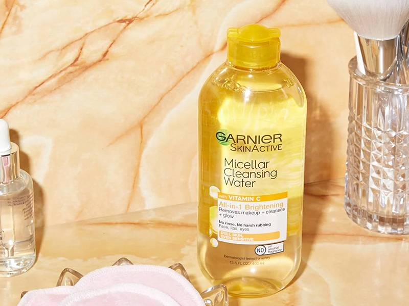

What Micellar Water Does and Why You Should Be Using It
18-3-2023
What’s more gentle than most foaming cleansers and more effective at breaking down the day’s makeup and debris than makeup wipes? Don’t worry, this isn’t a riddle we’re leaving for you to solve — the answer is micellar water. Micellar waters are gentle formulas that can be used on their own as part of a double-cleansing routine. Below, we’re breaking down exactly what micellar waters do, how they work and detailing 16 of our editors’ favorite formulas.
While it may look like plain old water in a bottle, micellar water is actually a powerful yet gentle cleansing medium. Micellar water is made up of micelles, which are small, round cleaning molecules suspended in water. Micelles work together to attract and gently remove impurities on the skin’s surface, making the category a great option for refreshing your skin in the morning or removing stubborn makeup in the evening.
When using a traditional cleanser, it’s customary to wet your face, lather up and rinse. But micellar water has a no-rinse formula. You simply soak a cotton ball or pad with the water and sweep it across your face until the pad comes up clean. (We love the Garnier SkinActive Micellar Cleansing Eco Pads because they’re incredibly soft, reusable and last up to 1,000 washes.) Then, follow up with your normal skincare routine.
You can also use a micellar water as the first step of a double-cleansing routine. Double cleansing is a great way to remove all traces of stubborn makeup, including products like long-wear foundation and waterproof mascara. To double cleanse with micellar water, apply the micellar water of your choice to a cotton pad and massage it on dry skin. Follow by washing your face with water and a gel, foaming or cream cleanser.
Micellar water gets its name from micelles, which act like little magnets to attract dirt, sweat, oil and makeup. They whisk the debris away without stripping your skin the way a harsher cleanser might, and help leave it free of impurities. Because the formula cleanses your skin on its own, there’s no need to worry about rinsing it off. The no-rinse format makes micellar water great for packing on long flights or road trips — you can toss a travel-size version in your bag and use it to freshen up even if you’re far from a sink.
The beauty of most micellar waters is that they are no-rinse formulas, so you can use them to take your makeup off and move on with your skincare routine immediately, instead of washing them off as you would with a traditional cleanser. They’re great for taking your makeup off after a long day or while you’re traveling.
As mentioned above, you can also use a micellar water as the first step of a double-cleansing routine, following up your micellar water with a traditional cleanser if you choose.
While it’s always important to check the packaging instructions of your micellar water, most are formulated to be gentle enough for everyday use. Some can even be used in both your morning and night skincare routines. We recommend checking in with a board-certified dermatologist to curate a skincare routine that fits your concerns.
You can use micellar water morning and night to wash your face. For best results, check the instructions on your bottle’s packaging — some formulas are suited for the eye, lips and face, while others should only be used on the face and eyes. You’ll also want to check the label to make sure the micellar water you're using will work well for your skin type — or you can check out the list of our product recommendations below.